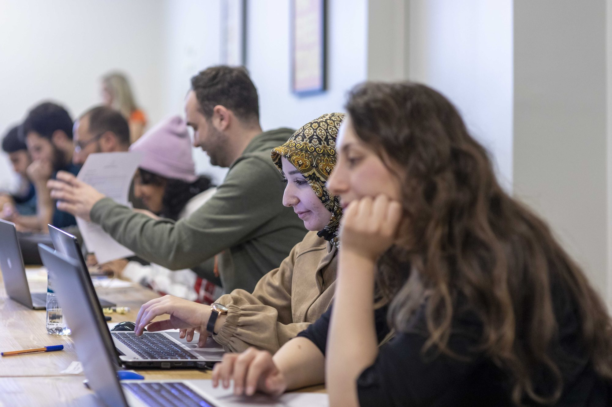
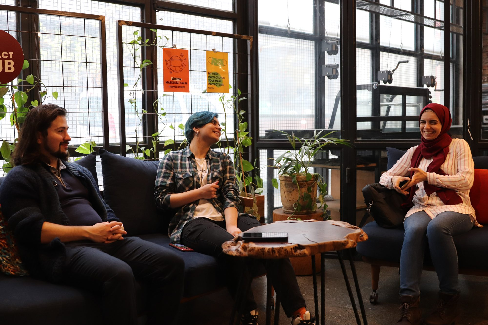
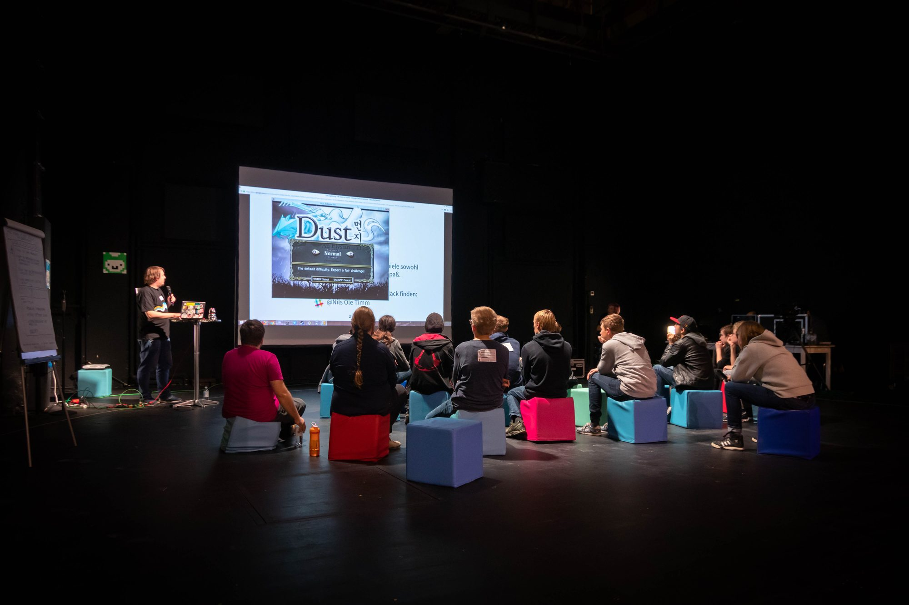
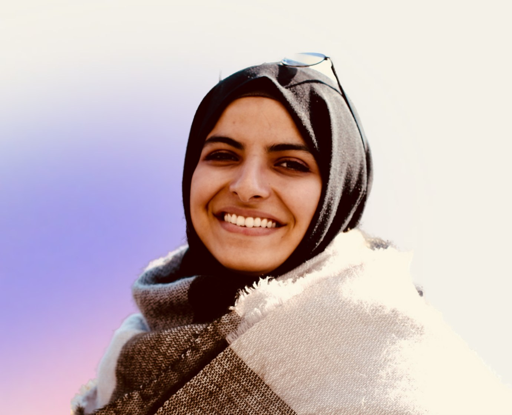
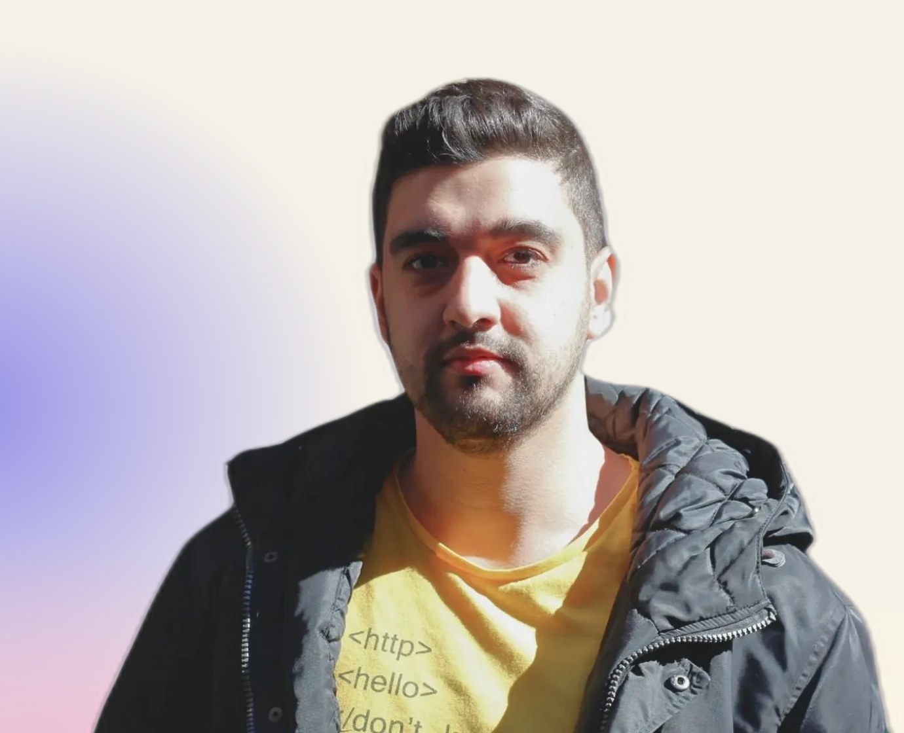

Blog
Stories, ideas and news from Re:Coded
How our alumni build careers, what we’re learning about work in the age of AI, and what’s next for our programs.

Featured · Insights
We taught people to code. Now we teach them to think.
In 2024, after nearly a decade of running coding bootcamps, Re:Coded did something unusual for a nonprofit: we decided to stop.
 Alexandra Clare · 28 Sep 2026 · 5 min readRead the article
Alexandra Clare · 28 Sep 2026 · 5 min readRead the article Latest
All posts

InsightsWe taught people to code. Now we teach them to think.
28 Sep 2026 · 5 min read
InsightsWhy we teach systems thinking before AI
27 Oct 2026 · 5 min read News
NewsApplications are open: inside Source Code Accelerator
20 Oct 2026 · 4 min read Alumni stories
Alumni storiesHow Abdullah redesigned his future
5 Feb 2025 · 2 min read News
NewsRe:Coded partners with the London Digital Jobs and Skills Hub
11 Nov 2024 · 3 min readNewsUK-Ukraine Tech Bridge partners with Re:Coded to empower Ukrainian tech talent
8 Oct 2024 · 5 min read News
NewsRe:Coded and TalentLift partner to bring upskilling to displaced talent
7 Oct 2024 · 5 min read Alumni stories
Alumni storiesLunar Salameh’s journey to becoming a full-stack developer
12 Jul 2024 · 5 min read Alumni stories
Alumni storiesA new path: Belal’s journey from pharmacy to software engineering
12 Jul 2024 · 7 min read Alumni stories
Alumni storiesFrom Syrian refugee to impact-driven entrepreneur: Jin’s story
23 Feb 2024
Alumni storiesShahed’s journey to become a machine learning engineer
22 Feb 2024
Alumni stories